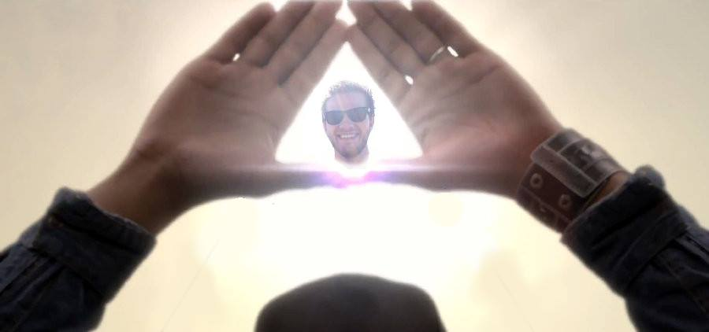

The Benjaminati
Illuminati but better
What is this?
Basically the Benjaminati threory proves that every existing thing leads back to the Benjaminati.
Even more basically the Benjaminati is the creator of the life, the universe and everything.
The Benjaminati is love. The Benjaminati is life.
And this is The Church Of The Benjaminati.
This Site was created by Niels,
the supreme high priest,
skilled in the art of spaghetti,
a Java artist,
a Boo beliver, the one an only Niller!
Why should I join?
Look closely at your or your mom's phonenumber. You'll realize that the first three digits contains about three digits, try looking at the three last digits and the three mid digits.
Think about this for a while. Three times in the number, three digits appear.
This is known as the Benjaminati syndrom. It's very dangerous and infectious.
You must join the Benjaminati to prevent it from spreading and getting lethal
Especially the Benjaminati needs more mailmen, to make the world more like the world in Postman Pat.
How can I join?
The only thing you'll need to join, is accept this license: